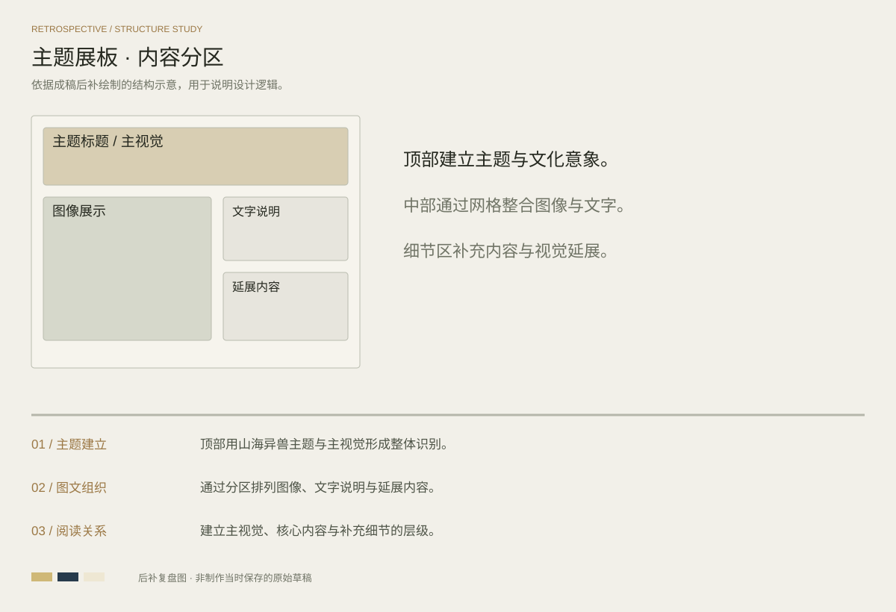

PROJECT 07 / CULTURAL POSTER
山海异兽志
国风主题 · 内容展示海报
以异兽与山海意象建立主题氛围，将主视觉、图像展示与文字说明整合为一张内容丰富的竖版海报。
完整设计 / FULL PROJECT点击图片放大查看
DESIGN REVIEW / STRUCTURE STUDY
方案复盘与版式推演
基于当前成稿后补绘制的结构示意，用于解释信息层级、构图与视觉延展；此图为方案复盘，不代表制作当时保存的原始草稿。

主题建立
顶部用山海异兽主题与主视觉形成整体识别。
图文组织
通过分区排列图像、文字说明与延展内容。
阅读关系
建立主视觉、核心内容与补充细节的层级。